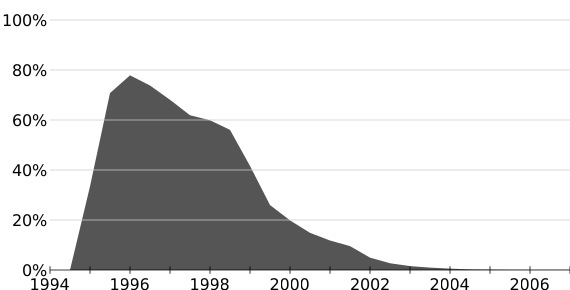
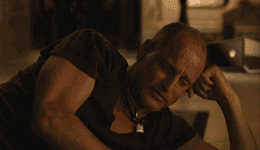

In 1995, Breandan Eich created LiveScript while working for Netscape
His task was to make Netscape Navigator's newly added Java support more accessible
His audience was mostly web designers and developers who needed to be able to tie into page elements (forms, images, etc) without a compiler or knowledge of object-oriented programming.
Wait... What is Netscape Navigator?2
Netscape Navigator was a proprietary web browser and Internet Explorer's main competitor
They could still be around today, but...

Usage share of Netscape Navigator, 1994–2007

Back to LiveScript, I mean JavaScript
LiveScript was renamed JavaScript before the year ended
The language was widely used to manipulate images
It was very easy to copy and paste snippets anywhere
Downside is that it could only be tested inside the browser
Internet Exploper was one version behind Navigator, which isn't a suprise.
ECMAScript
European Computer Manufacturer Association
Netscape and Sun wanted to standardize the language
This partnership with ECMA was adopted in 1997
But in the meantime, things were all over the place
The DOM was still trying to become truly universal
ECMAScript Continued3
ECMAScript 2 releases in 1998
ECMAScript 3 releases in 1999
Work for ES4 started in 2000
Yahoo! joined with Microsoft to oppose ES4 with ECMASCRIPT 3.1 in 2007
After some conflict, ECMAScript 3.1 became ECMAScript 5 in 2008
ES6 or ECMAScript 2015 is now the new kid on the block